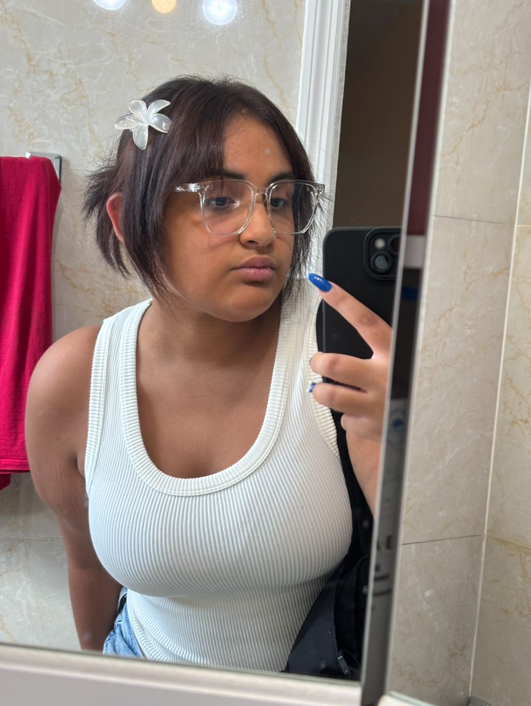

A Star's Story
Welcome to the home page for all my creative ideas and adventures, I'm Arin and here lies all my creative genius and stories from the mind! I hope you enjoy, my friends...

This website was made to share and keep track of all my ideas, art, and a bit of branding. My goal is to have people enjoy my work and have a nice looking site to traverse and share with friends.
This is me! An 18 year old artist enrolled in college and trying to find themself in NYC.